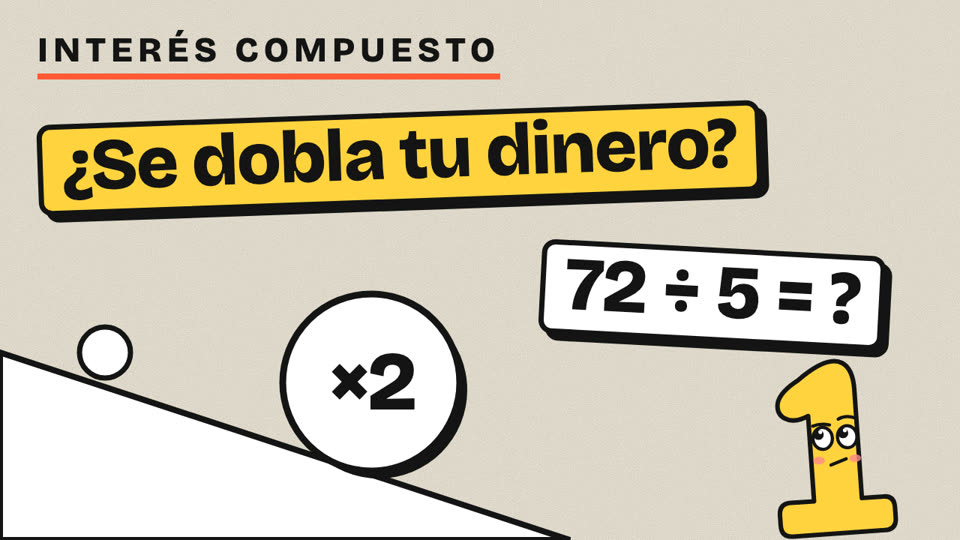

Episodios / Temporada 1 / Episodio 6
Qué es la desviación típica: 2 autobuses, misma media

El vídeo se estrena en YouTube el 19 de noviembre. Mientras, ya puedes jugar con el simulador.El vídeo es de YouTube y solo se carga cuando pulsas play.
El episodio en 3 ideas
Juega con «La goma elástica»
Cada punto es el retraso de un autobús, de lunes a viernes. Arrástralos y mira cómo se estiran las gomas que los atan a la media: la desviación típica resume, en un solo número, cuánto se estiran todas juntas. Arranca con la línea 7 del vídeo.
Arrastra cada punto a izquierda o derecha (o tócalo y usa las flechas del teclado). La raya discontinua es la media; cada goma va de la media a su punto. Cuanto más lejos, más se estira y más roja se pone.
| Día | Retraso | ① Distancia a la media | ② Al cuadrado |
|---|
Cuatro retos
Mueve los puntos de arriba. Cada reto se marca solo con un ✔ cuando lo consigues.
¡Cuatro de cuatro! La lección: la desviación típica resume en un número cuánto se alejan los datos de su media, en las mismas unidades, y da más peso a los que se alejan mucho.
Lo que la desviación típica no es
- No es la distancia de un día concreto. Con la línea 12, la desviación típica es 10 y ningún día se aleja 10 minutos: cuatro se alejan 5 y uno, 20.
- No es la distancia media a la media. Se parece, pero al elevar al cuadrado los datos lejanos pesan más, así que suele salir algo mayor.
- No puede ser negativa. Lo más pequeña que puede ser es 0, cuando todos los datos son iguales.
Ver las cuentas
Los cuatro pasos del vídeo: ① cuánto se aleja cada dato de la media; ② cada distancia al cuadrado (así no quedan negativos); ③ la media de esos cuadrados, que se llama varianza y está en minutos al cuadrado; ④ la raíz de la varianza, que vuelve a minutos: la desviación típica.
Aquí dividimos entre 5, los días que miramos, como en el vídeo. Si esos 5 días fueran una muestra para estimar cómo llega el autobús todo el año, se dividiría entre 4 (n − 1) y saldría algo mayor: la línea 7 daría unos 2,2 minutos en vez de 2.
En la tabla, las distancias y los cuadrados se ven redondeados a un decimal; las cuentas se hacen sin redondear.
Las líneas de autobús y sus retrasos son inventados para el ejemplo.© 2026 Soy Numerito. Todos los derechos reservados: no se permite copiar ni reutilizar este simulador, sus textos ni sus diseños sin permiso por escrito.Abrir el simulador solo, a pantalla completa →

Siguiente episodio →Interés compuesto: inflación y comisiones, explicado